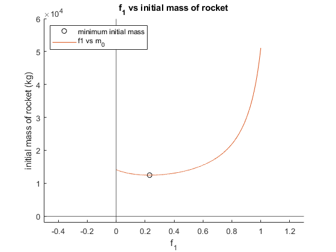

Isp1 = 350;
Isp2 = 470;
Finert1 = 0.05;
Finert2 = 0.07;
dV = 9200;
m_pay = 1000;
g0 = 9.81;
f1 = linspace(0,1,10000);
minit = zeros(1,10000);
massmin = realmax;
for x = 1:10000
f2 = 1 - f1(x);
dV1 = f1(x) * 9200;
dV2 = f2 * 9200;
numerator1 = exp(dV1 / (g0 * Isp1)) * (1 - Finert1);
denominator1 = 1 - Finert1 * exp(dV1 / (g0 * Isp1));
numerator2 = exp(dV2 / (g0 * Isp2)) * (1 - Finert2);
denominator2 = 1 - Finert2 * exp(dV2 / (g0 * Isp2));
minit(x) = m_pay * (numerator1 / denominator1) * (numerator2 / denominator2);
if(minit(x) < massmin)
massmin = minit(x);
f1min = f1(x);
end
end
hold on
xlim([-.5 1.3])
ylim([-2000 60000]);
plot(f1min,massmin,'color','k','linestyle','none','marker','o')
plot(f1,minit);
xline(0);
yline(0);
legend("minimum initial mass","f1 vs m_0");
legend('location','northwest');
title("f_1 vs initial mass of rocket")
xlabel("f_1");
ylabel("initial mass of rocket (kg)");
